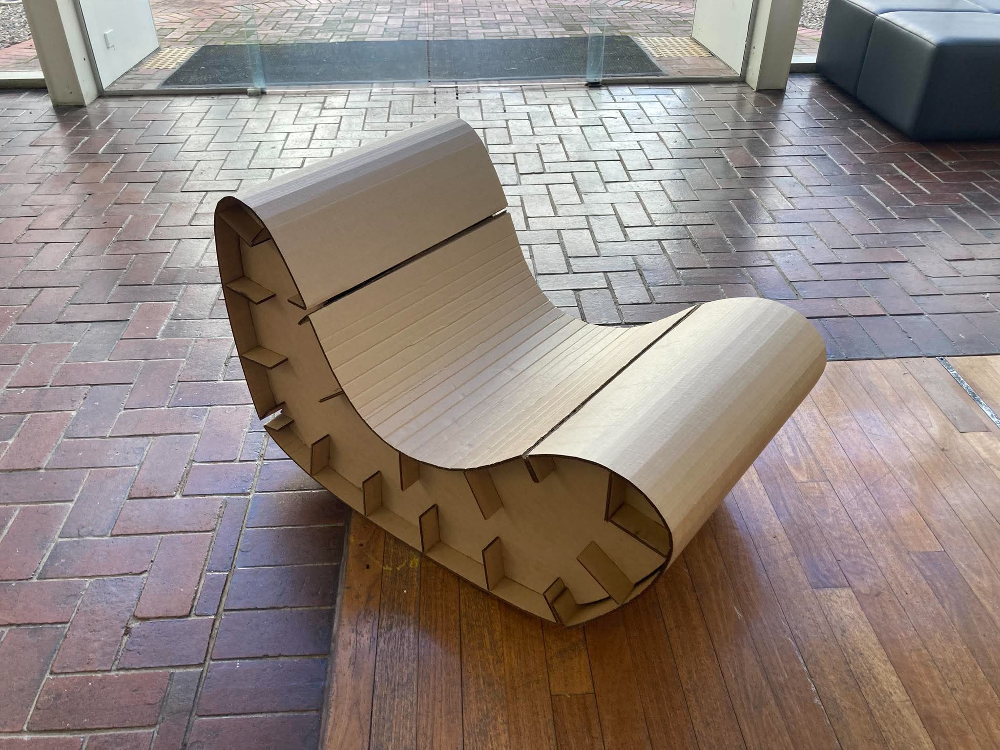
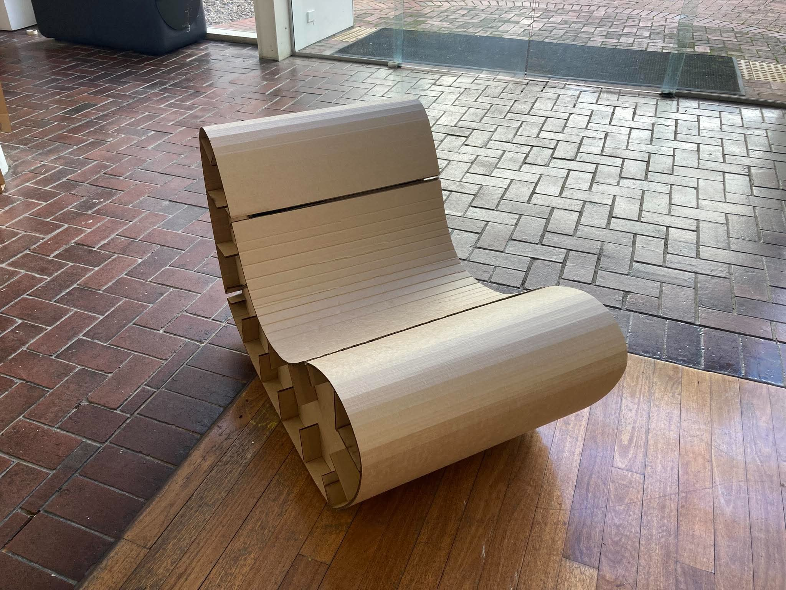
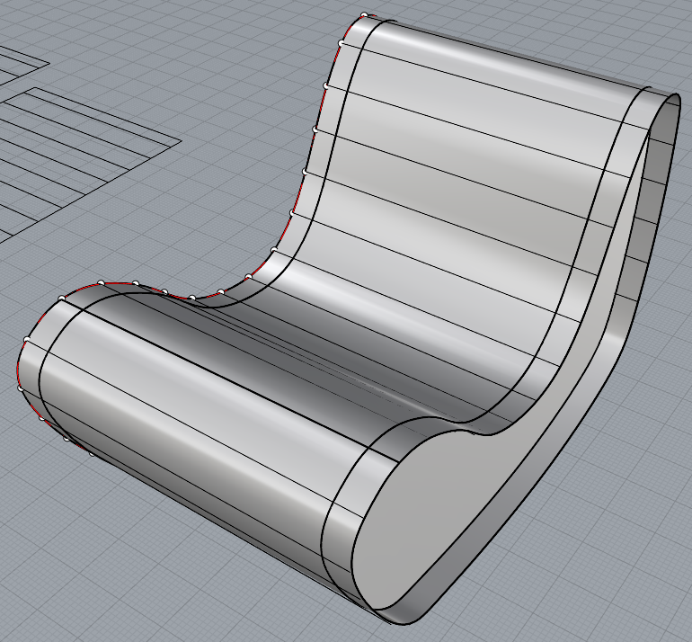
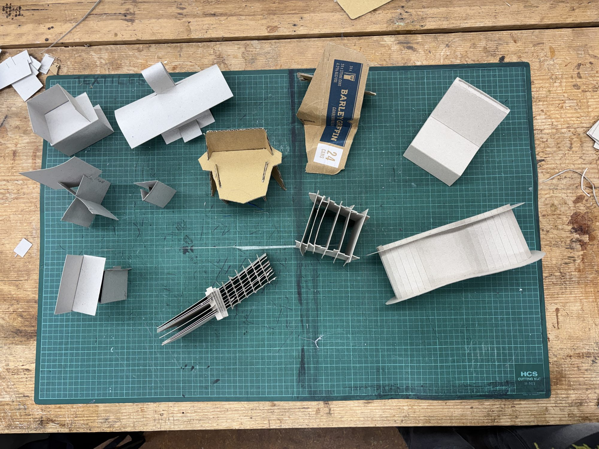
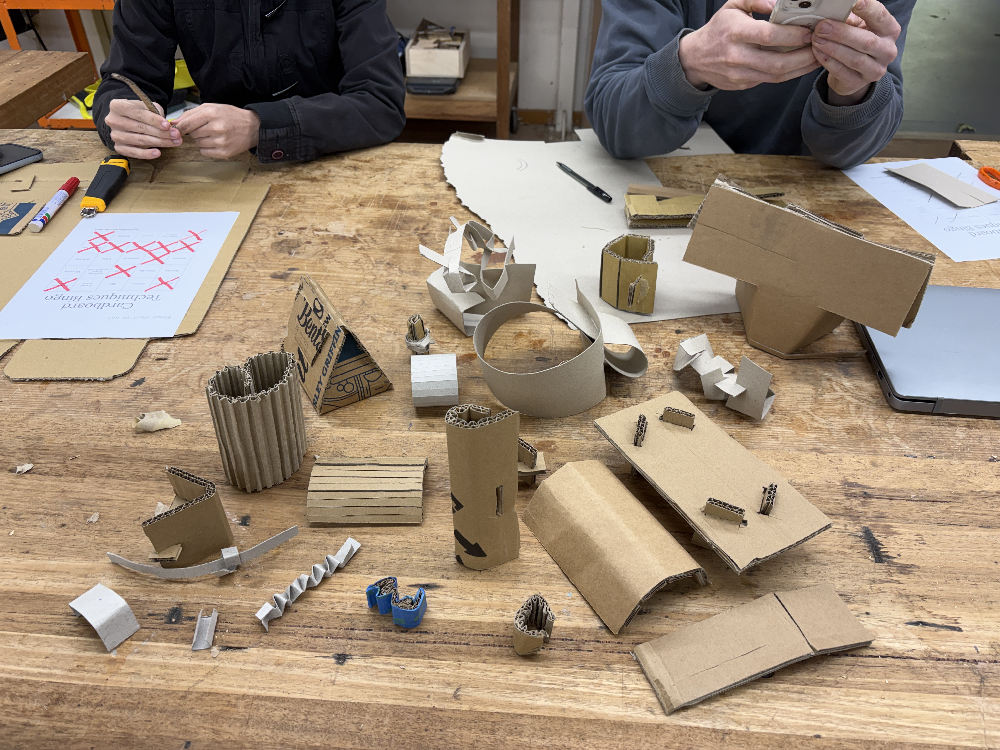
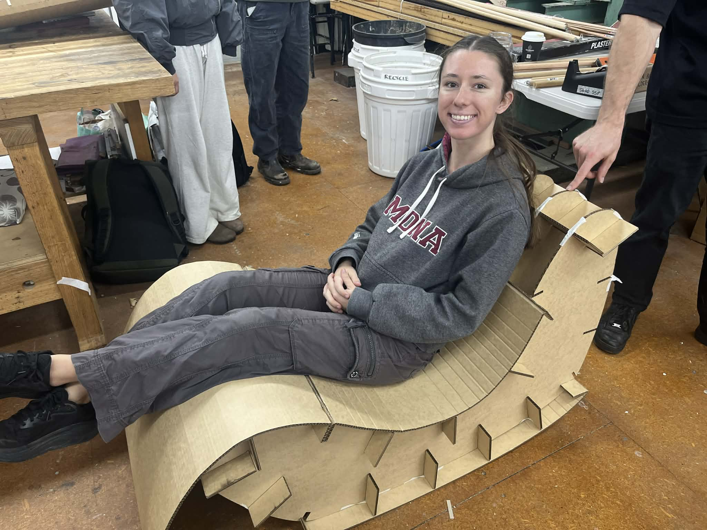
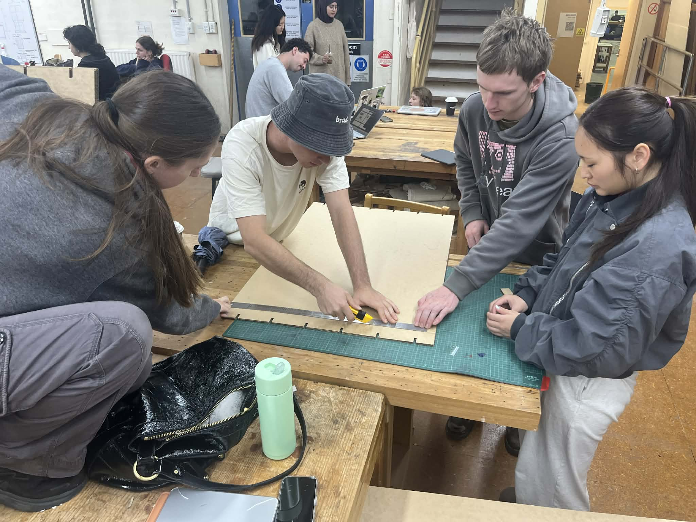
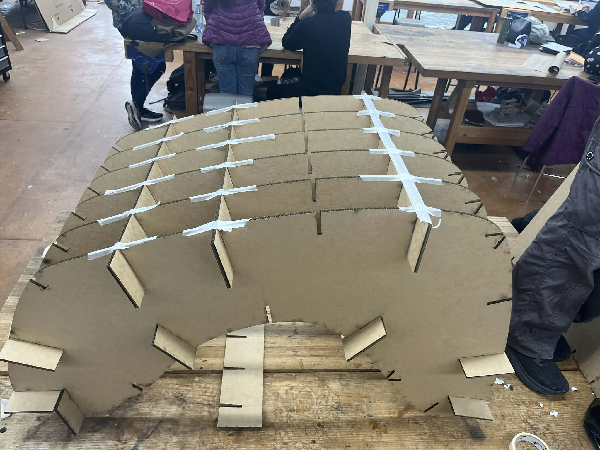

DESIGN / 02
Cardboard Chair: The Bean
- WORK
- Rocking lounge chair / pop-up seating
- YEAR
- 2026
- MEDIUM
- Corrugated cardboard · Slotted dry/friction joinery · CAD and digital prototyping
- CONTEXT
- Group university project · ANU DESN2015 · Semester 1 (May 2026)

Overview
The Bean is a full-scale, rocking lounge chair made primarily from corrugated cardboard. Created with the Folded Flaps group as part of DESN2015, it was designed as a lightweight, recyclable seating concept for moments of rest in public and private spaces.
I was involved throughout the conceptual and physical design work, taking responsibility for the CAD designs, 3D printing, modelling, prototyping and assembly. My focus was on turning an approachable, organic form into a workable structure rather than on the project’s research or documentation.
Design Brief
Design a portable, affordable, functional body-support object that makes deliberate use of cardboard’s structural characteristics and can be assembled with dry or friction-based joins. The chair needed to work at full scale, be comfortable to use and avoid unnecessary materials or permanent fixings.
Our aim was to combine the flowing silhouette of a relaxed rocking chair with an efficient load-bearing structure. The challenge was to keep the form expressive without sacrificing stability, ease of assembly or material economy.


Process
We began by researching cardboard seating precedents and rapidly testing different body-support structures. Rather than settling on angular furniture, we pursued a softer, bean-shaped profile. Two ideas came together: a curved, wrap-around exterior and an interlocking grid of cardboard ribs beneath it.
A 1:5 model let us test the rocking geometry, slat placement and internal framework before making the full-scale chair. Early models showed that a grid could bear compressive loads but could twist laterally, so we introduced interlocking slots and adjusted the bracing and connector positions.
Scaling up brought new problems. We increased the number of horizontal slats, refined slot angles so connections could wedge more securely under load, and corrected clashes between overlapping components. Some wrap-around pieces were initially measured along the inside rather than the outside curve, leaving them shorter than intended. This became a useful lesson in translating models into full-size, load-bearing objects.





Outcome
The result was a striking full-scale cardboard lounger that supported a seated person and rocked smoothly. Its continuous form felt relaxed and inviting, while the visible internal geometry demonstrated the structural role of precisely cut and interlocked cardboard.
There were still limitations. Some slat tabs needed better engagement, and the width of the chair made sitting down and getting up less natural than expected. For me, the project reinforced the value of testing a design with the actual material and with real human movement—not just as a digital model.